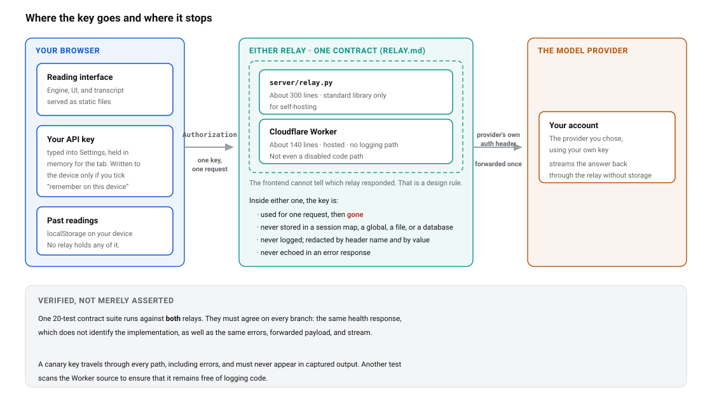
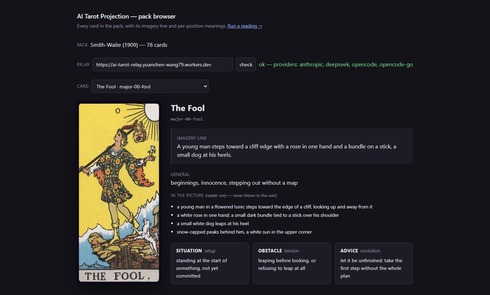

How如何实现
Privacy as architecture, not policy隐私靠架构，不靠承诺
The honest answer to “why should I trust this with my key” is that you shouldn’t have to. You should be able to read it. So the whole path a key takes is short enough to read in one sitting, and there are three of them to choose from: straight to the provider with nothing of mine in between, where that provider’s CORS policy allows it; through a relay you run yourself; or through the hosted one, for when you just want to open a URL on your phone.对“我凭什么把密钥交给它”这个问题，诚实的回答是：你不必信任它，你可以直接把它读完。所以密钥要走的整条路都短到能一口气读下来，而且有三条可选：直连服务商，中间没有任何属于我的东西（前提是对方的 CORS 策略允许）；走你自己跑起来的那个中继；或者走托管的那一个，适合你只想在手机上打开一个网址的时候。
Whichever path it takes, the rules are the same. The key arrives in an Authorization header, is used inside the single request that carried it, and then it is gone: never written to a session map, a global, a file, or a database. It is never logged. Redaction goes by header name and by value, so a key that turns up inside an upstream error message is scrubbed before it reaches any output, and it is never echoed back in an error response either. Neither relay knows what tarot is, holds session state, or keeps any of the conversation. Your transcripts live in your own browser storage and nowhere else.无论走哪条路，规矩都一样。密钥放在 Authorization 请求头里发出，用在携带它的那一次请求上，然后就没了：不写进会话表，不写进全局变量，不写进文件，也不写进数据库。它不会进日志。脱敏既按请求头的名字，也按它的值，所以哪怕某个密钥出现在上游的报错信息里，都会在进入任何输出之前被擦掉，更不会被原样写回错误响应。两个中继都不知道塔罗是什么，不保存会话状态，也不留下任何对话。你的记录只在你自己的浏览器里。
Two relays, one contract, and a test that says so两个中继，一份契约，还有一套证明它的测试
Self-hosting gets a ~300-line Python relay with no dependencies outside the standard library; the hosted path gets a ~140-line Cloudflare Worker. Both implement the same contract, written down in RELAY.md, and the frontend cannot tell which one is answering. That indistinguishability is a design rule, so it is tested rather than asserted: one contract suite of twenty tests runs against both relays and requires them to agree on every branch, including a health response that does not give away which implementation you reached.自托管用的是一个约 300 行的 Python 中继，除标准库外没有任何依赖；托管路径用的是一个约 140 行的 Cloudflare Worker。两者实现同一份契约（写在 RELAY.md 里），前端分不出应答的是哪一个。分不出来这件事本身就是一条设计规则，所以它靠测试，而不是靠声称：一套二十个用例的契约测试对两个中继各跑一遍，要求它们在每条分支上结果一致，连健康检查的响应也不能透露你连到的是谁。
The same suite sends a canary key down every path, error paths included, and fails if that string appears anywhere in the captured output. The two relays differ in exactly one way, deliberately. The Python one has a dev-log flag, off by default, for a person logging their own conversations on their own machine. The Worker has no logging code path at all, not a disabled one and not a commented-out one, and a test greps its source to keep it that way.同一套测试还会把一个“金丝雀”密钥送进每条路径，出错的路径也不例外；只要这串字符出现在捕获到的任何输出里，测试就判失败。两个中继只有一处刻意保留的不同：Python 那个带一个默认关闭的调试日志开关，方便人在自己的机器上记录自己的对话。Worker 则根本没有写日志的代码，不是关掉的，也不是注释掉的；还有一个测试专门 grep 它的源码，好让它保持这样。

The key’s whole life. It is typed into the settings panel and held in memory for the tab, written to the device only if you tick “remember on this device”, then sent in one Authorization header to whichever relay is configured. Inside either one it is used once and dropped: never stored, never logged, never echoed. Past readings stay in your own browser storage, and no relay holds any of them. The band along the bottom is what keeps the middle column honest: twenty contract tests against both implementations, a canary key that must appear in no captured output on any branch, and a grep over the Worker source for logging code.密钥走过的整条路。你把它填进设置面板，它只存在当前标签页的内存里；只有你勾选“在本设备上记住”，它才会写到设备上。随后它随一个 Authorization 请求头发往所配置的中继，在里面用一次就丢：不存、不记、不回显。以前的解读记录留在你自己的浏览器里，任何中继都不持有。图最下面那一条，是让中间这一栏站得住脚的东西：二十个契约测试同时跑在两个实现上，一个“金丝雀”密钥在任何分支的输出里都不许出现，还有一次 grep，检查 Worker 源码里有没有写日志的代码。
A conversation engine that judges before it speaks先判断，再开口
The session engine runs in the browser, and an LLM makes three kinds of decisions inside it, each constrained to a schema rather than left to prose. The opening reads the first thing you say: did you actually name something to look at, and is a tarot frame the wrong thing to hand this person. The flip gate runs on every turn and decides whether a card has earned its turn, weighing how much you disclosed, whether the answer was about your life or about the picture, whether it was hedged, and what the stakes are. Stakes have a crisis level, and it is the one that drops the frame: no cards, no imagery, no closing ritual.会话引擎跑在浏览器里，大模型在里面做三类决定，每一类都被 schema 框住，而不是任它自由发挥。开场先读你说的第一句话：你到底有没有指出一件想看的事，以及塔罗这套框架是不是根本不该递给这个人。翻牌门控每轮都跑，判断这张牌是不是已经被“挣”到了：你说出了多少、这句话讲的是你的生活还是画面本身、有没有留退路，以及这件事有多重。最重的一档是危机，一旦落到这一档，整个框架就撤掉：不再有牌，不再有意象，也没有收尾的仪式。
The third is the anchor, committed once after the first card: what this reading is actually about, in your register rather than as a diagnosis. An anchor phrased as a verdict is the failure mode, because every question after it steers toward confirming the sentence the anchor already wrote. So a beat that asserts a finding is sent back to the judge once, for an open question instead. The cost of being wrong about that is one extra call, which is cheap next to spending two more cards proving something you never said.第三类是锚点，在第一张牌之后定下一次：这场解读到底在谈什么，用你的说法讲出来，而不是给一个诊断。锚点最容易出问题的地方，就是被写成一句结论：只要它先下了判断，后面每个问题都会朝着印证那句话去。所以，一旦锚点断言了某个“发现”，它会被退回去重判一次，改成一个还敞开着的问题。判错的代价不过是多一次调用，比起用剩下两张牌去证明一句你根本没说过的话，这便宜得多。
Questions climb a ladder: what it is, what happened next, what it is like for you, why it matters to you, what you will do. A question may stand at most one rung above the answer before it, and that cap is what keeps a reading from turning into an interview. A protocol scanner runs rule checks over a finished transcript and reports where the reader broke its own rules. The tests, the seeded fixture, and the debug page all call the same scanner, so there is one definition of a violation rather than three that can drift apart.提问是一级一级往上走的：它是什么、后来怎么了、这对你来说是什么滋味、它为什么要紧、你打算怎么做。一个问题最多只能比上一个回答高一级，正是这条上限，让解读不至于变成审问。协议扫描器会对完成的记录做规则检查，指出读牌人在哪里破了自己的规矩。测试、种子固定的样例会话和调试页调用的是同一个扫描器，所以“什么算违规”只有一个定义，不会有三份各自漂移的版本。
Bring your own deck用你自己的牌
If you own a tarot deck, the app would rather you used it. Choose “my own deck” before you start and it deals empty slots instead of cards: you shuffle, lay them face down yourself, and turn one over by hand when the reading reaches it. It then asks which card you turned, and you tell it. The only thing that crosses the wire is the card’s name. It is the better version of the idea, because the object on the table is genuinely yours and genuinely random, and because the small ceremony of turning a card over by hand is most of what the interface was imitating in the first place.如果你手上有一副塔罗牌，这个应用更希望你用那副。开始前选“用我自己的牌”，它发下来的就不是牌，而是空位：你自己洗牌，自己把牌扣在桌上，轮到哪一张，就自己伸手翻开。然后它问你翻到的是哪张，你告诉它。经过网络的只有牌名。这才是这个想法更好的样子：桌上那个东西真属于你，也真随机；而亲手翻开一张牌的那点仪式感，本来就是这个界面想要模仿的东西。
Forkable symbol packs可以 fork 的符号包
Tarot is one symbol pack on top of a generic reflection engine, and a pack is just a directory: the cards and their per-position meanings, the persona that says how the reader talks, the few-shot examples of what good looks like, and the images. All of them are static files the frontend fetches, which is the point. Changing how the reader sounds is a file save, never a redeploy. A validator checks any pack directory against the schema, not just the one that ships, because “fork it, drop in your own deck” only means anything if a fork can check itself.塔罗只是一个符号包，底下是一台通用的反思引擎。一个包不过是一个目录：牌和它们在每个牌位上的释义、规定读牌人怎么说话的人设、示范“好是什么样”的少样本示例，还有图片。它们全是前端直接取用的静态文件，这正是关键：换一种口吻只要存一次文件，不用重新部署。校验脚本能检查任意一个包目录，而不只是随仓库附带的那一个；毕竟“fork 它，换上你自己的牌”这句话，只有在 fork 能自查时才作数。

The pack browser, which needs no key at all and so is the cheapest way to confirm a relay is up: the green line is a live health check naming the providers it can reach. Below it, one card as the engine sees it: an imagery line, a reader-only description of what is literally in the picture, and a separate meaning per position (situation, obstacle, advice). All of it is text in a data file, editable without touching a line of code.符号包浏览器。它一点密钥都不需要，因此是确认中继是否在线最省事的办法：绿色那行是实时的健康检查，列出它能连到的服务商。下面是引擎眼里的一张牌：一句意象描述、一段只给读牌人看的“画面上到底有什么”，以及处境、阻碍、建议三个牌位各自的释义。这些都是数据文件里的文字，不碰一行代码就能改。
Credits署名与许可
The 78 card images are scans of the Smith-Waite deck first published in 1909 and illustrated by Pamela Colman Smith, which is in the public domain. The card back is not a scan and is not old: it was drawn by luciellaes and released under CC0, which asks for no credit. It is given here because the work was worth the ask. The code is MIT.78 张牌面是 Smith-Waite 牌组的扫描件，该牌组 1909 年首版，由 Pamela Colman Smith 绘制，已进入公有领域。牌背不是扫描件，年代也不久远：它由 luciellaes 绘制，以 CC0 发布。CC0 并不要求署名，这里仍然写上，是因为这份工作值得。代码采用 MIT 许可。